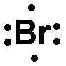

1) Which of the following is the correct formula for the compound sodium sulfide?
A) NaS2
B) NaS
C) So2S
D) Na2S*
Sodium is a fixed charge metal and sulfide is a nonmetal cation, so this will be an ionic compound, and the charges can be know from the periodic table. Sodium will carry a +1 charge because it is in the 1A group. Sulfide will carry a -2 charge because sulfur is in the 6A group. The lowest common multiple of 1 and 2 is 2. Therefore we will need 2 sodium ions and 1 sulfide ion. That gives us a formula of Na2S.
2) What is the empirical formula for C6H12O6?
A) C3H6O3
B) CH2O*
C) C2H4O2
D) C6H12O6
An empirical formula represents the simplest ratio of elements present in a compound. It shows the relative number of atoms of each element in a compound without specifying the actual number of atoms. To get the empirical formula you need to divide the subscripts in the equation (C6H12O6) by their greatest common divisor. In this case 2 and 6 are divisible by 6, which gives CH2O as the empirical formula.
3) An ionic bond is best described as
A) A bond between two non-metals
B) A bond between two metals
C) A bond formed when electrons are transferred from one atom to another*
D) A bond formed when electrons are shared between two atoms
A covalent bond is formed when two atoms share electrons in order to achieve a stable electron configuration. In a covalent bond, the atoms involved have similar electronegativity, meaning they have similar tendencies to attract electrons. This sharing of electrons allows both atoms to fill their outermost energy levels and achieve greater stability.
An ionic bond is formed when electrons are transferred from one atom to another, resulting in the formation of ions. In an ionic bond, one atom donates electrons to another atom, resulting in the formation of a positively charged ion (cation) and a negatively charged ion (anion). The attraction between these opposite charges holds the ions together and forms an ionic bond.
4) Which of the following would have the highest lattice energy?
A) MgO*
B) Li2O
C) Na2O
D) Li2O
There are two parts that are involved in lattice energy. One is the charge on the ions (this is the bigger priority), and the other is the distance between the ions. This is only testing on knowing that the larger the charge on the ions, the larger the lattice energy. Since Mg has the highest charge, MgO will have the highest lattice energy.
5) An unknown compound contains only carbon and hydrogen. When it undergoes combustion analysis, it produces 16.941 g of CO2 and 13.884 g of H2O. Given that it has a molar mass of 16.0 g/mol, what is the molecular formula?
A) C1H2
B) C0.5H2
C) C1H11
D) C1H4*
Step 1: Convert the grams of CO2 and H2O to moles of C and O. 16.9 g CO2 x \( \frac{1 mol CO_2}{44.01 g CO_2} \)x \( \frac{1 mol C}{1 mol CO_2} \) = 0.385 mol C 13.9 g H2O x \( \frac{1 mol H_2O}{18.016 g H_2O} \) x \( \frac{2 mol H}{1 mol H_2O} \) = 1.54 mol H
Step 2: Divide both mole amounts by the lower of the two numbers. 0.385 mol C/0.385 = 1.00 mol C 1.54 mol H/0.385 = 4.00 mol H
Step 3: Get the smallest whole number ratio of each mole amount to get the empirical formula.
Step 4: Calculate the molar mass of the empirical and dived the molar mass of the compound by the molar mass of the empirical formula. This number will tell you what you need to multiply the subscripts in the empirical formula by to get the molecular formula.
Thus the molecular formula is: C1H4
6) Calculate the molar mass for Sn(ClO4)4.
A) 218.2 g/mol
B) 516.5 g/mol*
C) 872.6 g/mol
D) 324.5 g/mol
To calculate the molar mass for Sn(ClO4)4, take the number of each element from the periodic table and multiply it by the molar mass of the element, then sum all the molar masses from each element. Sn: 118.71 g/mol x 1 = 118.71 g/mol Cl: 35.45 g/mol x 4 = 141.8 g/mol O: 16.00 g/mol x 20 = 300 g/mol Total: 516.5 g/mol
7) Which of the following is the correct Lewis structure for Br ?
A) 
B)
C)
D) *
Since Br is in the 7A group, it should have 7 valence electrons in its Lewis structure. Thus is the answer.
8) An unknown compound contains only carbon and hydrogen. When it undergoes combustion analysis, it produces 19.364 g of CO2 and 7.9288 g of H2O. What is the empirical formula for the compound?
A) CH2*
B) CH3
C) C2H4
D) CH4
Step 1: Convert the grams of CO2 and H2O to moles of C and O. 19.4 g CO2 x \( \frac{1 mol CO_2}{44.01 g CO_2} \)x \( \frac{1 mol C}{1 mol CO_2} \) = 0.440 mol C 7.93 g H2O x \( \frac{1 mol H_2O}{18.016 g H_2O} \) x \( \frac{2 mol H}{1 mol H_2O} \) = 0.440 mol H
Step 2: Divide both mole amounts by the lower of the two numbers.
Step 3: Get the smallest whole number ratio of each mole amount. 1 mol C to 2 mol H
Thus the empirical formula is: CH2
9) Which of the following is the correct Lewis structure for Br-?
A) *
B)
C)
D)
Since Br- has a -1 charge, it will have one more electron than the neutral Br. Br is in the 7A period, so the Lewis structure should have 7 + 1 = 8 electrons. Thus the correct Lewis structure is .
10) A triple covalent bond contains how many electrons?
A) 6*
B) 8
C) 4
D) 3
A single covalent bond contains 2 shared electrons. A double covalent bond contains 4 shared electrons. A triple covalent bond contains 6 shared electrons.
11) Determine the name for NaC2H3O2·3H2O
A) Sodium (I) acetate trihydrate
B) Sodium acetate tetrahydrate
C) Sodium acetate dihydrogen monoxide
D) Sodium acetate trihydrate*
NaC2H3O2·3H2O is an ionic compound and a hydrate. To name the ionic compound portion give the name of the cation followed by the name of the anion. In this case that would be sodium acetate. The hydrate portion of the formula is named based on the number of water molecules. Since this hydrate has 3 water molecules in its formula the prefix 'tri-' is used before the word 'hydrate'. Thus the correct name is sodium acetate trihydrate.
12) Give the formula for Iron (II) nitrate
A) Fe2NO3
B) FeNO3
C) Fe(NO3)2*
D) Fe(NO2)2
The Roman numeral (II) tells us that the charge on Iron is +2. From a list of polyatomic ions we can know that the charge on nitrate is -1. The lowest common multiple of 2 and 1 is 2, so the number of Iron ions will need to be 1, and the number of nitrate ions will need to be 2. This will give us a formula of Fe(NO3)2.
13) What is the empirical formula for a sulfur oxide (compound composed of sulfur and oxygen) that is 50.0% sulfur by mass?
A) SO2*
B) S3O
C) S2O
D) SO3
Since the sulfur oxide compound is is 50.0% sulfur by mass, it will be 100% - 50.0% = 50.0 % oxygen by mass.
Assuming a 100 g sample gives us: 50.0 g sulfur and 50.0 g oxygen.
Next convert those grams to moles. 50.0 g S x \( \frac{1 mol S}{32.06 g S} \) = 1.56 mol S 50.0 g O x \( \frac{1 mol O}{16.00 g O} \) = 3.13 mol O
Then divide by the lower of the two mol amounts, and get the lowest whole number ratio.
14) Give the name for N2O3.
A) Nitrogen oxide
B) Dinitrogen trioxide*
C) Nitrogen (II) oxide
D) Nitrogen trioxide
Both N and O are nonmetals, so we will need to put a Greek prefix before the name of each element, then give the second element an -ide ending. However, mono- is dropped from the beginning in cases where there is only 1 of the first element in the compound. Since there are 2 N and 3 O, the name is Dinitrogen trioxide.
15) What is the name of the compound Li2SO4?
A) Lithium sulfate*
B) Lithium sulfuroxide
C) Lithium monosulfate
D) Lithium sulfide
Li2SO4 is an ionic compound because it contains a polyatomic ion (SO42-). Thus to name Li2SO4, you need to say the name of the polyatomic cation followed by the name of the polyatomic anion. Therefore the correct name is Lithium sulfate.
16) Calculate the formula mass for C6H12O.
A) 89.07 amu
B) 84.16 amu
C) 100.2 amu*
D) 29.02 amu
To calculate the formula mass for C6H10O, take the number of each element from the periodic table and multiply it by the formula mass of the element, then sum all the formula masses from each element. C: 12.01 amu x 6 = 72.06 amu H: 1.008 amu x 10 = 12.10 amu O: 16.00 amu x 1 = 16.00 amu Total: 100.2 amu


 *
*